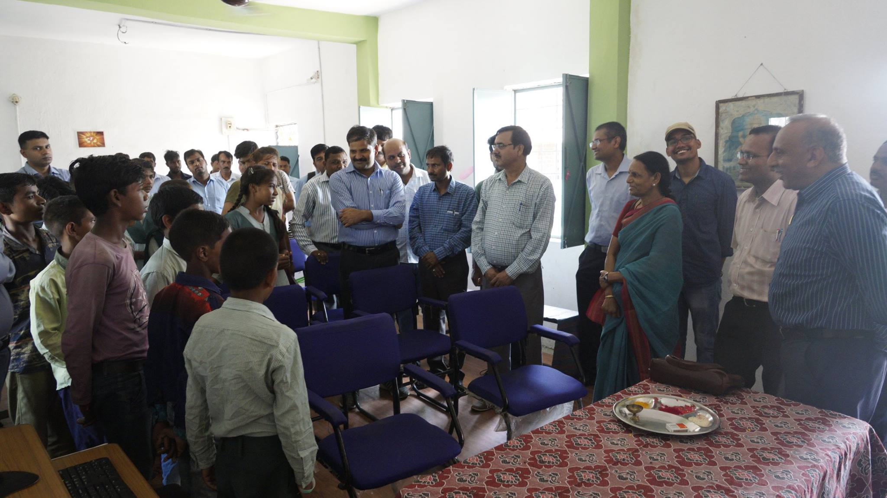

Welcome to RAA Club
IIT INDORE had started its Social Outreach Program in 2011 with the constitution of a social organization called “AVANA” constituted by a group of socially conscious faculty members and students. The group has so far reached out to a neighboring school and extended their support to the school in various forms including teaching students about cleanliness and hygiene.
Rashtriya Avishkar Abhiyan is a unique concept developed by the Ministry of Human Resource Development that aims to inculcate a spirit of inquiry, creativity and love for Science and Mathematics in school children.
The Rashtriya Avishkar Abhiyan (RAA) was launched on 9th July, 2015 by Late Dr. A.P.J. Abdul Kalam, Former President of India. While launching the Abhiyan, Dr. Abdul Kalam focused on developing the spirit of innovation and experimentation among students. He further laid stress on four qualities of uniqueness: Great Aim, Quest of Knowledge, Hard Work, and Perseverance. Emphasising the value of learning he added we learn to live, we learn to think and we learn to learn.
He concluded his speech by stressing upon attaching highest value to Science.
(more details).
At IIT Indore ‘Rashtriya Avishkar Abhiyan (RAA)’ is planned to provide nourishing and nurturing support to the adopted schools in a dual track approach to make Science, Mathematics and Technology exciting to children and encourage them to have an enduring interest both inside classroom and outside classroom activities. Read more about our (Objectives).
At IIT Indore Rashtriya Avishkar Abhiyan (RAA) is part of Ek Bharat Shreshtha Bharat Group (EBSB).
[click on image to go to respective club website]


We are looking for passionate volunteers from nearby schools, institutions, and companies to join us !
News and Events
17, February 2020IIT Indore 10th Anniversary : Essay Writing Competition- As part of the Foundation Day Celebrations,the institute is organizing an Essay Writing Competition among all Indore Region Schools.
7, February 2020
Visits of Students and Teachers @ IIT Indore - See details
26, January 2019
Independance day Celebrations- at Govt school Simrol.
24, June 2017
Inauguration of 'Center of Excellence in Computer Education' at Simrol Government School by Director Sir. 
14, November 2016
Children's day Celebrations- conducted a biology session with the help of BSBE students for the students of Simrol Govt. School